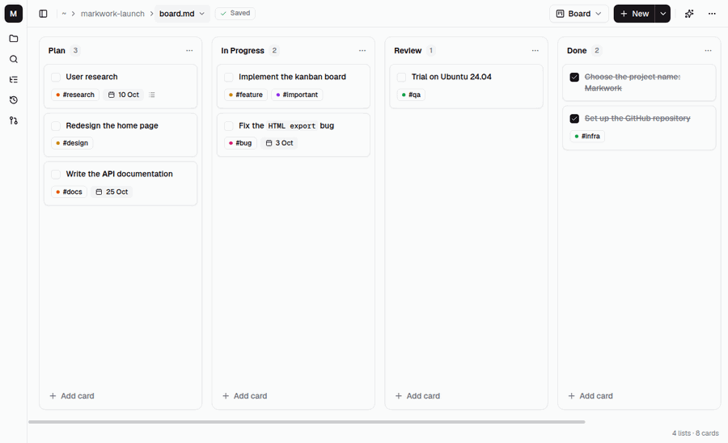
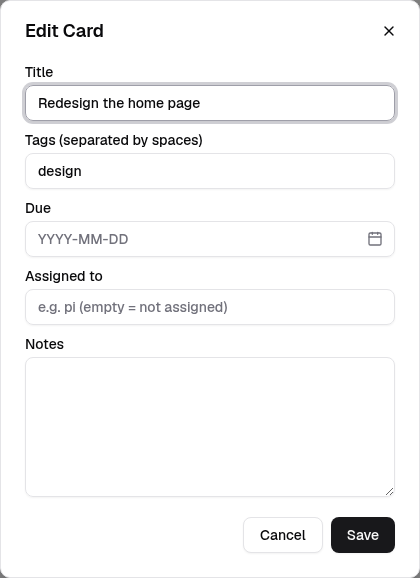

Workspace
The kanban board
A Markdown file with layout: board opens as a board. Every change is written back as plain Markdown text that can be diffed and committed.

File format
---
layout: board
---
## Plan
- [ ] Write the report #important [due:: 2026-10-20]
card notes (indented lines)
- [ ] Send the invitations
## Done
- [x] Book the venue- A
##heading becomes a list, a- [ ]item becomes a card, and[x]means done. - The indented lines below a card are its notes.
#tagis shown as a colored label;[due:: 2026-10-20]as a due date, red when it is overdue.- Anything that is not recognized is preserved as it is.
Creating a board
- The ☰ menu → New Kanban Board creates an empty board that has no name yet.
- Right-click in the file tree → New Kanban Board… creates it right away as a file in that folder, with the lists Plan, In Progress, and Done.
- Ctrl+Shift+B switches between the board view and the text.
Working with cards
- Drag a card between lists or to another position in the same list; near the edge, the board scrolls automatically.
- Click a card to edit its title, notes, due date, and Assigned to.
- The due date can be typed (with a time if you like, e.g.
2026-10-20 09:00) or chosen with the calendar button, with Today and Clear. Choosing a date keeps the time that was already typed.

- Right-click to move, move up/down, and delete; check the box to mark it done.
[[Note]]in a card title is shown as a link that can be clicked. A link in the notes of a card is shown as a↗ namerow below the chip. The notes field in the card dialog suggests names when you type[[.- Undo and redo apply to changes on the board.
The board and the agent
- The Markwork agent changes the board through
edit_note(cards, their typed fields, and lists), always through the review window. - A card with
[agent:: pi]is worked on by the pi harness in another project folder. See The pi orchestrator. The contents of the notes linked with[[ ]]on a card are included in the pi prompt as context.